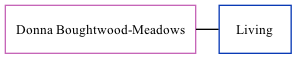

Donna L Cowell (née Boughtwood-Meadows)
[ Home ] | [ Calendar ] | [ Surnames Index ] | [ Family History ]Donna Boughtwood-meadows, the wife of Brian John Cowell (the second cousin once-removed on the mother's side of Nigel Horne), and married Brian in Canterbury, Kent, England around Aug 20011 (Jul/Aug/Sep).
Citations
- England & Wales, Marriage Index: 1916-2005 Online publication - Provo, UT, USA: The Generations Network, Inc., 2009.Original data - General Register Office. England and Wales Civil Registration Indexes. London, England: General Register Office. © Crown copyright. Published by permission of the Cont
Family Tree
Generated by ged2site. Last updated on Nov 13, 2024